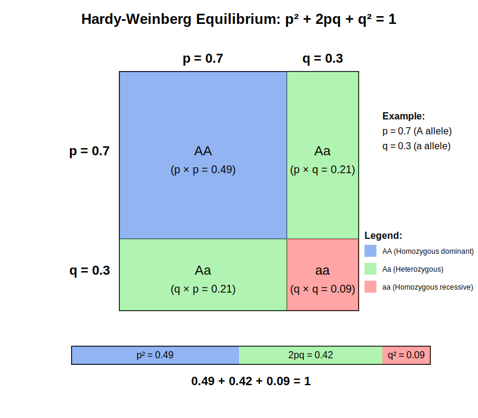

Intuitional Description#
The Hardy-Weinberg equilibrium (HWE) describes how allele and genotype frequencies remain constant across generations in a population where there is no interference from evolutionary forces.
Graphical Summary#

Key Formula#
For a genetic variants with two alleles (A and a) with frequencies \(p\) and \(q\) respectively (where \(p + q = 1\)):
Where:
\(p^2\) = frequency of genotype AA
\(2pq\) = frequency of genotype Aa
\(q^2\) = frequency of genotype aa
Technical Details#
Expected Counts Under HWE#
The expected counts under HWE are:
where:
\(f_A\): frequency of allele A
\(f_a = 1 - f_A\): frequency of allele a
\(N\) = Total number of individuals.
Test HWE Using Chi-squared Test#
Then one can use Pearson’s chi-squared test to test if HWE holds:
where:
\(O_i\) = Observed genotype count (AA, Aa, aa).
\(E_i\) = Expected genotype count under Hardy-Weinberg Equilibrium.
The summation runs over all genotype categories.
To determine statistical significance, compare \(\chi^2\) with a chi-square distribution with 1 degree of freedom (df = 1). The p-value is computed as:
If \(p < 0.05\), we reject the Hardy-Weinberg Equilibrium assumption.
When HWE Doesn’t Hold#
Non-random mating: When individuals choose mates based on genotype or phenotype, homozygosity increases beyond HWE expectations.
Natural selection: When certain genotypes have survival or reproductive advantages, their frequencies change between generations.
Migration: Gene flow introduces new alleles from other populations, altering local allele frequencies.
Genetic drift: Random sampling effects in small populations cause unpredictable changes in allele frequencies.
Mutation: New alleles emerge through mutation, changing the genetic composition of the population.
Common Misconceptions#
While entire genomes aren’t in HWE, individual loci often are, especially neutral markers.
HWE is surprisingly robust to minor violations of its assumptions.
Deviations from HWE often signal important biological phenomena rather than errors.
HWE describes the mathematical relationship between allele and genotype frequencies, not the absence of genetic variation.
Role of HWE in Statistical Genetics#
Hardy-Weinberg Equilibrium serves several critical functions in statistical genetics:
Quality control baseline: Significant deviations from HWE often signal genotyping errors or technical artifacts rather than biological phenomena, providing an efficient method to identify problematic markers.
Null hypothesis framework: HWE establishes the expected genotype distribution under neutral conditions, serving as the statistical null model against which evolutionary forces can be detected.
Allele frequency estimation: When only partial genotype data is available, HWE principles allow researchers to estimate complete population allele frequencies.
Statistical power improvement: Filtering out markers that violate HWE improves signal-to-noise ratio in association studies, increasing power to detect true genetic effects.
Population structure inference: Systematic HWE deviations across multiple loci can reveal cryptic population substructure that might confound genetic analyses.
Example#
Here we use the original data from E.B. Ford (1971) on the scarlet tiger moth, for which the phenotypes of a sample of the population were recorded.
Table 1: Example Hardy–Weinberg Principle Calculation
Phenotype |
White-spotted (AA) |
Intermediate (Aa) |
Little spotting (aa) |
Total |
|---|---|---|---|---|
Number |
1469 |
138 |
5 |
1612 |
We first test the HWE on the original data above, and then manually make some data to show when the HWE doesn’t hold.
# Clear the environment
rm(list = ls())
# Data from E. B. Ford (1971) on the scarlet tiger moth
AA <- 1469 # White-spotted
Aa <- 138 # Intermediate
aa <- 5 # Little spotting
total <- AA + Aa + aa
# Calculate observed allele frequencies
n_A <- (2*AA + Aa)
n_a <- (2*aa + Aa)
n_total <- 2*total
p <- n_A/n_total # Frequency of A allele
q <- n_a/n_total # Frequency of a allele
# Print allele frequencies
cat("Allele frequencies:\n")
cat("p (A) =", round(p, 4), "\n")
cat("q (a) =", round(q, 4), "\n")
Allele frequencies:
p (A) = 0.9541
q (a) = 0.0459
# Calculate expected genotype counts under HWE
exp_AA <- p^2 * total
exp_Aa <- 2*p*q * total
exp_aa <- q^2 * total
# Create a table of observed vs expected
genotypes <- c("AA", "Aa", "aa")
observed <- c(AA, Aa, aa)
expected <- c(exp_AA, exp_Aa, exp_aa)
results <- data.frame(Genotype = genotypes, Observed = observed, Expected = expected)
results$Difference <- results$Observed - results$Expected
# Print the table
cat("\nObserved vs Expected Genotype Counts:\n")
print(results)
Observed vs Expected Genotype Counts:
Genotype Observed Expected Difference
1 AA 1469 1467.397022 1.602978
2 Aa 138 141.205955 -3.205955
3 aa 5 3.397022 1.602978
# Perform chi-square test
chi_sq <- sum((observed - expected)^2/expected)
degrees_freedom <- 1 # number of genotypes - number of independent alleles = 3 - 2 = 1
p_value <- 1 - pchisq(chi_sq, degrees_freedom)
cat("\nChi-square test result:\n")
cat("Chi-square statistic =", round(chi_sq, 4), "\n")
cat("Degrees of freedom =", degrees_freedom, "\n")
cat("p-value =", format(p_value, scientific = TRUE), "\n")
# Conclusion
alpha <- 0.05
cat("\nConclusion:\n")
if(p_value < alpha) {
cat("The population deviates significantly from Hardy-Weinberg equilibrium (p < 0.05)")
} else {
cat("The population is in Hardy-Weinberg equilibrium (p >= 0.05)")
}
Chi-square test result:
Chi-square statistic = 0.8309
Degrees of freedom = 1
p-value = 3.619985e-01
Conclusion:
The population is in Hardy-Weinberg equilibrium (p >= 0.05)
Now that imagine that we observe twice the size of the Intermediate (Aa) and zero of the Little spotting (aa), and re-do the analysis:
Table 2: Example Hardy–Weinberg Principle Calculation (manually adjusted in this notebook)
Phenotype |
White-spotted (AA) |
Intermediate (Aa) |
Little spotting (aa) |
Total |
|---|---|---|---|---|
Number |
1469 |
276 |
0 |
1745 |
# Modified scenario: No aa genotypes observed
AA <- 1469 # White-spotted
Aa <- 138*2 # Intermediate
aa <- 0 # Little spotting (now zero)
total <- AA + Aa + aa
# Calculate observed allele frequencies
n_A <- (2*AA + Aa)
n_a <- (2*aa + Aa)
n_total <- 2*total
p <- n_A/n_total # Frequency of A allele
q <- n_a/n_total # Frequency of a allele
# Print allele frequencies
cat("Allele frequencies:\n")
cat("p (A) =", round(p, 4), "\n")
cat("q (a) =", round(q, 4), "\n")
# Calculate expected genotype counts under HWE
exp_AA <- p^2 * total
exp_Aa <- 2*p*q * total
exp_aa <- q^2 * total
# Create a table of observed vs expected
genotypes <- c("AA", "Aa", "aa")
observed <- c(AA, Aa, aa)
expected <- c(exp_AA, exp_Aa, exp_aa)
results <- data.frame(Genotype = genotypes, Observed = observed, Expected = expected)
results$Difference <- results$Observed - results$Expected
# Print the table
cat("\nObserved vs Expected Genotype Counts:\n")
print(results)
Allele frequencies:
p (A) = 0.9209
q (a) = 0.0791
Observed vs Expected Genotype Counts:
Genotype Observed Expected Difference
1 AA 1469 1479.91347 -10.91347
2 Aa 276 254.17307 21.82693
3 aa 0 10.91347 -10.91347
# Perform chi-square test
chi_sq <- sum((observed - expected)^2/expected)
degrees_freedom <- 1 # number of genotypes - number of independent alleles = 3 - 2 = 1
p_value <- 1 - pchisq(chi_sq, degrees_freedom)
cat("\nChi-square test result:\n")
cat("Chi-square statistic =", round(chi_sq, 4), "\n")
cat("Degrees of freedom =", degrees_freedom, "\n")
cat("p-value =", format(p_value, scientific = TRUE), "\n")
# Conclusion
alpha <- 0.05
cat("\nConclusion:\n")
if(p_value < alpha) {
cat("The population deviates significantly from Hardy-Weinberg equilibrium (p < 0.05)")
} else {
cat("The population is in Hardy-Weinberg equilibrium (p >= 0.05)")
}
Chi-square test result:
Chi-square statistic = 12.8683
Degrees of freedom = 1
p-value = 3.341915e-04
Conclusion:
The population deviates significantly from Hardy-Weinberg equilibrium (p < 0.05)